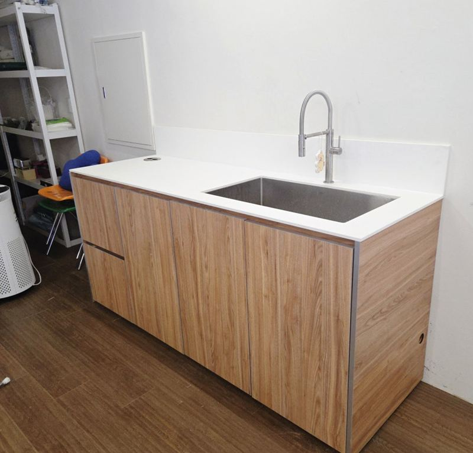
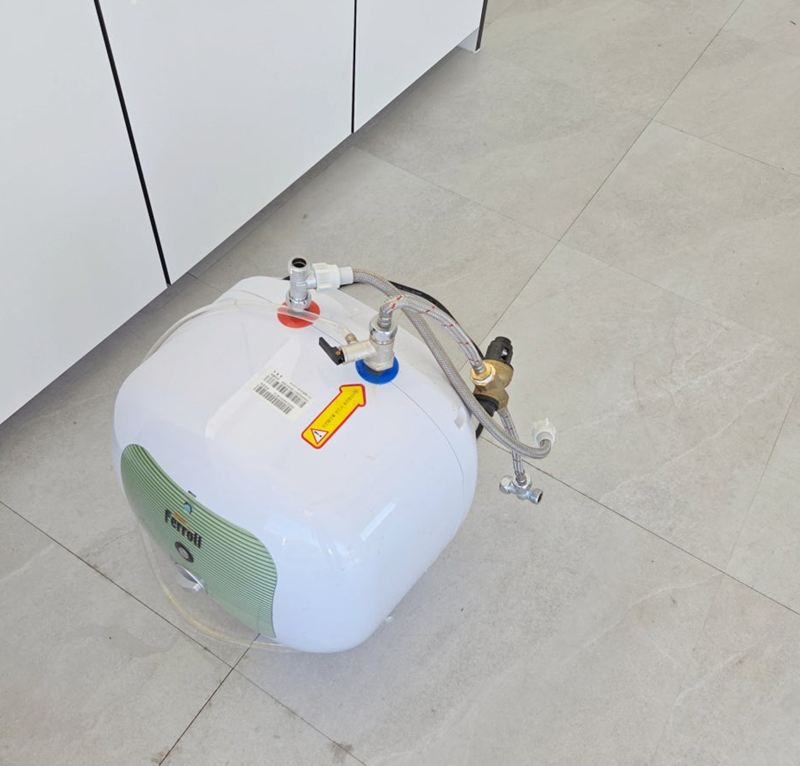
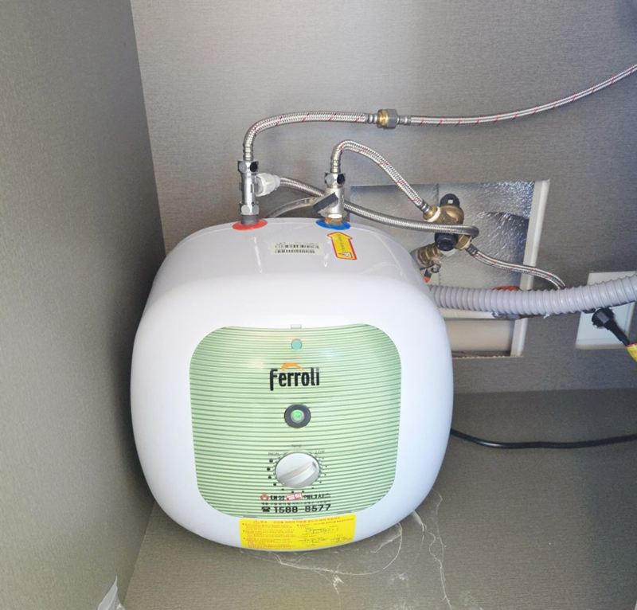
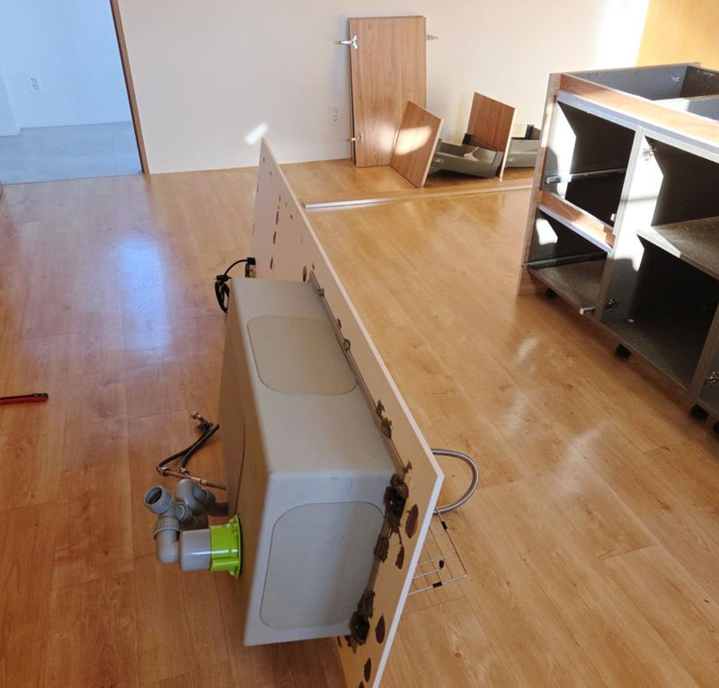
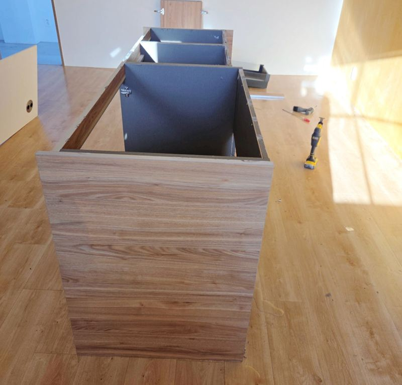
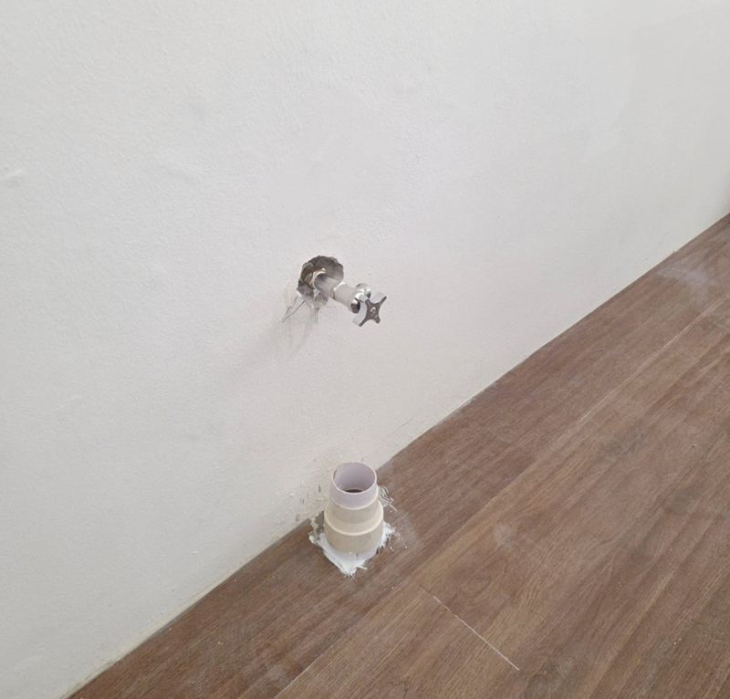
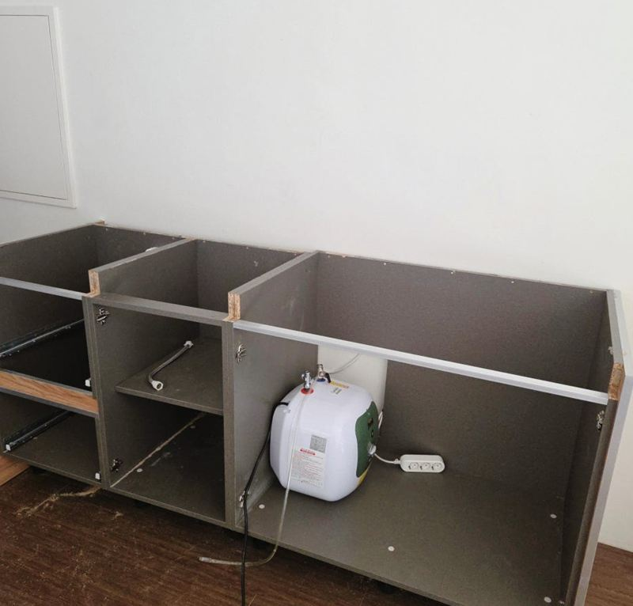
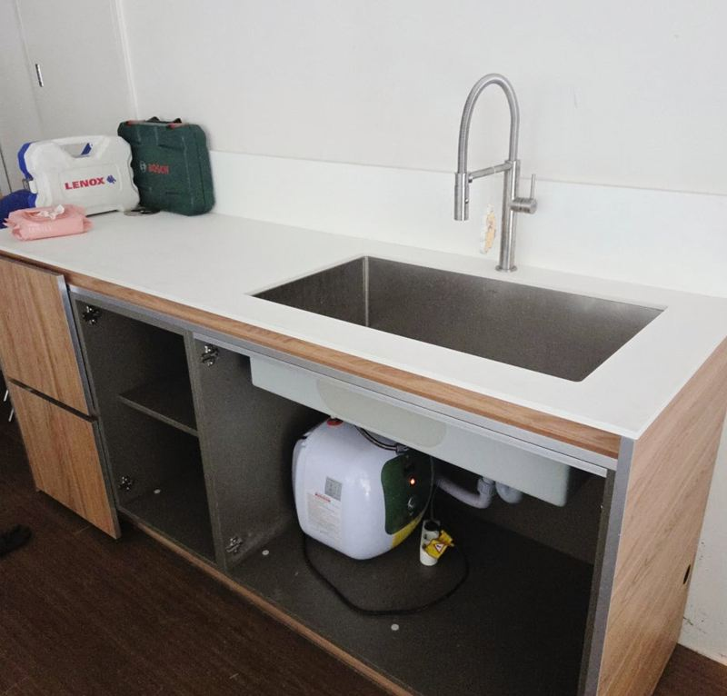
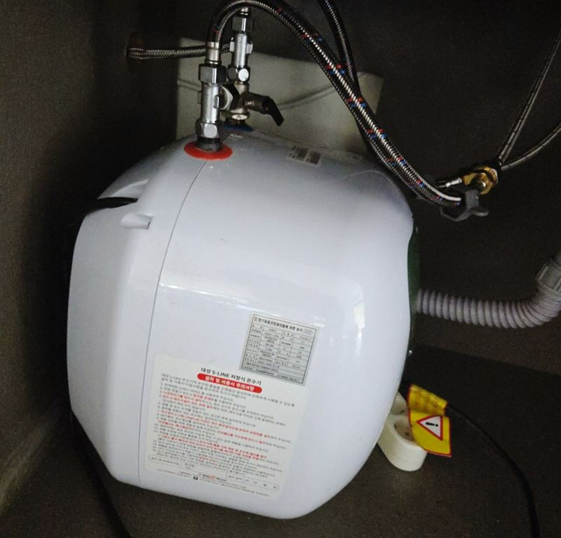

성동 사무실 이전 시 기존 싱크대 재설치 순서


이전 전재설치 후← 밀어서 전후 비교 →
"아직 멀쩡한데 버리기 아까워서요." 사무실을 옮기며 쓰던 탕비실 싱크대를 그대로 가져가고 싶다는 문의였어요. 길이 3m에 온수기까지 붙은 가구였고, 계단만 있는 3층에서 내려야 했어요. 새로 짜는 대신 분해 → 운반 → 재조립 순서를 처음부터 함께 짰어요.
통째로 들 수 없는 길이, 3m
상판, 하부장, 수전, 온수기가 한 덩어리로 연결된 상태라 그대로 들고 계단을 내려가면 상판이 틀어지거나 하부장이 깨질 수 있어요. 그래서 하부장 구조부터 살펴본 뒤 상판과 수전을 먼저 떼고, 온수기는 연결 상태를 확인하고 분리했어요.


푸는 순서가 다시 맞추는 순서예요
오래 쓴 가구는 실리콘, 상판 고정, 하부장 연결이 현장마다 조금씩 달라요. 하나씩 풀면서 어디가 어떻게 붙어 있었는지 확인해 두면, 새 공간에서 맞출 때 수평과 라인이 덜 틀어져요. 운반 중 흔들리지 않게 부품을 나눠 묶어서 차에 실었어요.


- 급수 잠그고 수전·온수기 분리
- 실리콘 걷어 내고 상판 분리
- 하부장 연결 풀고 나눠 포장
- 계단으로 내려 차량 운반
- 새 공간에서 하부장 → 상판 → 수전·온수기 순서로 재조립
새 공간 배관에 맞춰 하부장 타공
새 사무실에는 고객님이 미리 급수와 배수를 빼 두셨어요. 다만 예전 자리와 배관 위치가 같을 수는 없어서, 하부장 안쪽 판에 구멍을 새로 뚫어 배관이 억지로 꺾이지 않게 길을 냈어요.


상판을 다시 올려 좌우 수평을 맞추고, 수전과 온수기를 연결했어요. 벽과 가구가 만나는 곳은 실리콘으로 마감하고, 물을 흘려 배수와 누수를 확인한 뒤 마무리했어요.


이런 경우에 싱크대 이전을 많이 맡기세요
- 사무실 이사로 탕비실을 옮겨요쓰던 싱크대를 새 공간에 다시 세우는 일이 가장 많아요. 새 공간 배관이 준비됐는지 먼저 확인해요.
- 공유오피스·지식산업센터로 들어가요관리 규정상 작업 시간이 정해진 건물이 많아서 일정을 맞춰 움직여요.
- 주택 이사 때 맞춤 싱크대를 가져가고 싶어요새 집 벽 길이와 배관 위치에 맞게 줄이거나 늘릴 수 있는지 함께 봐요.
- 철거만 먼저 해야 해요사무실을 비우며 원상복구로 떼기만 하는 경우도 많아요.
사무실 싱크대 이전, 이런 걸 물어보세요
새 공간 벽 길이가 더 짧으면요?
하부장 구성을 바꾸거나 상판을 잘라 맞추는 방법이 있어요. 옮겨 갈 사무실 탕비실 크기를 먼저 재서 알려주세요.
엘리베이터가 없으면 추가 인원이 필요한가요?
가구 크기와 층수를 보고 인원을 정해요. 이 현장은 3층 계단 운반이었어요.
철거만 하고 버려 주실 수도 있나요?
철거만 하는 현장도 있어요. 떼어 낸 자재를 버릴지 가져갈지는 미리 말씀해 주세요.
온수기도 같이 옮겨 연결되나요?
네, 분리해서 옮긴 뒤 새 자리에서 다시 연결했어요. 전원 위치를 미리 확인해 주세요.
분해한 날 바로 설치까지 되나요?
운반 거리와 새 공간 준비 상태에 따라 하루에 끝나기도 해요. 이 현장은 배관이 미리 준비돼 있어 같은 날 마무리했어요.
상판이 대리석이면 옮기다 깨지지 않나요?
대리석·인조대리석 상판은 세워서 옮기고 모서리를 감싸 보호해요. 금이 가 있던 상판은 미리 말씀드려요.
다른 싱크대·수납장 현장
지금 싱크대 사진과 새 공간 사진, 층수와 엘리베이터 여부를 알려주세요.
전화 상담 010-4517-9872